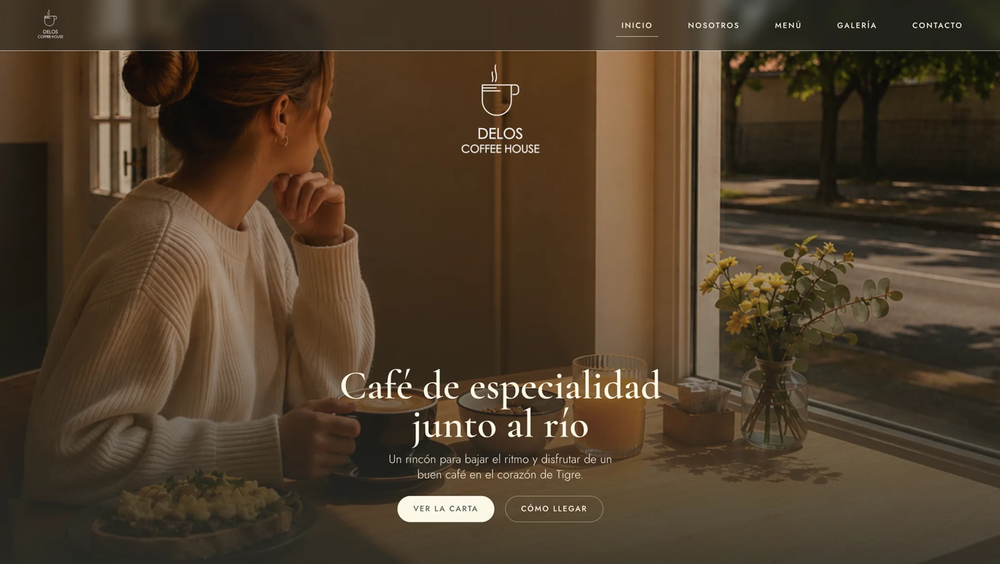
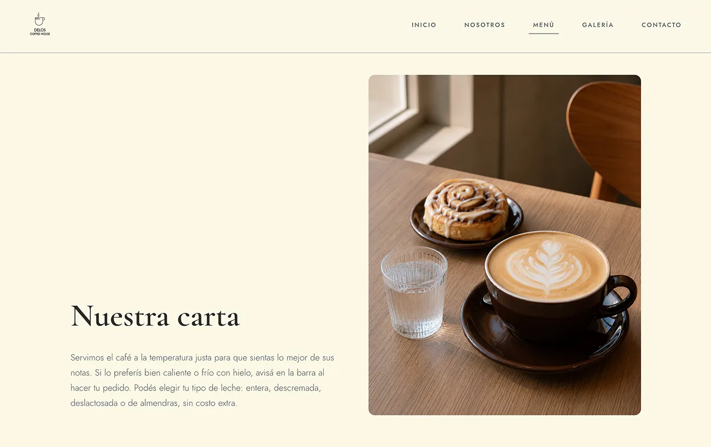
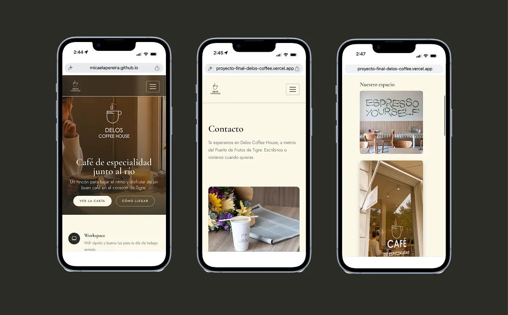
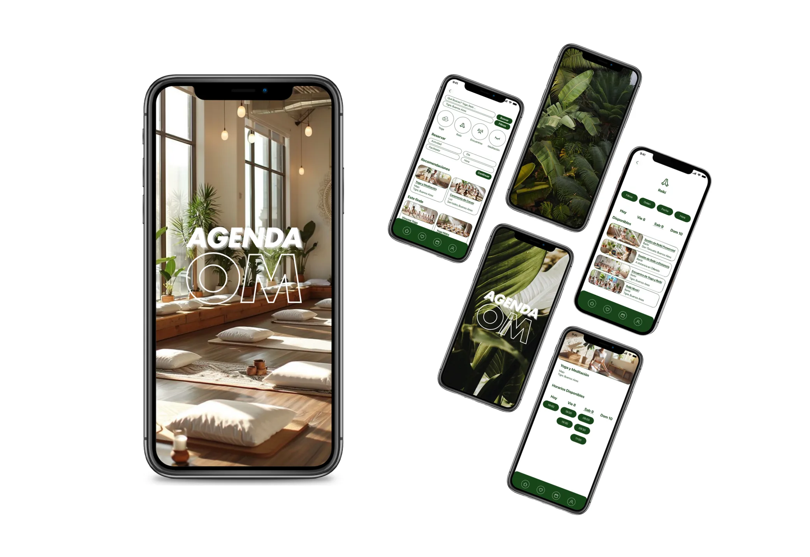
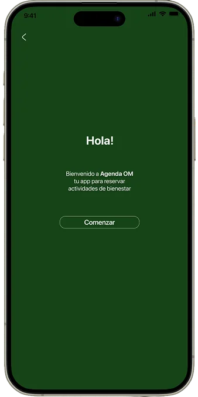
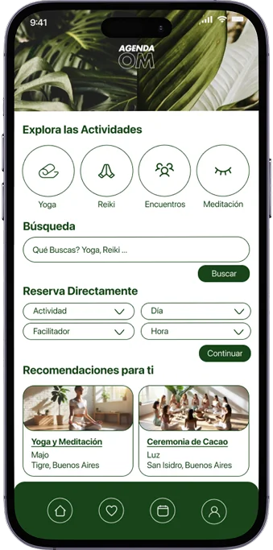
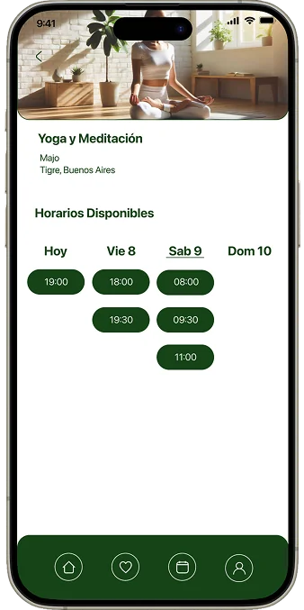
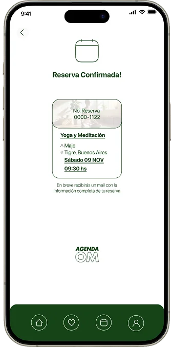

Mis Proyectos
Diseño + Desarrollo web
Delos Coffee HouseDiseño UI/UX + Prototipo
Agenda OMDiseño + Desarrollo web
MPereiraDesignUna cafetería frente al río, contada en una web.



Delos Coffee House es una cafetería de especialidad en Tigre, Buenos Aires. Fue mi proyecto final del curso de Desarrollo Web: un sitio de cinco páginas, 100% responsive, con una arquitectura SCSS modular (partials, variables y mixins) integrada con Bootstrap, SEO propio en cada página y animaciones con transiciones nativas y AOS.
El desafío era reflejar en el sitio todo lo que se transmite al visitar Delos: su estilo, el menú, el diseño del lugar, la ubicación frente al río y la atención y dedicación de su equipo. Que quien navegue la web sienta un anticipo de esa experiencia y se lleve un lindo recuerdo de ella.
Reservar un momento de bienestar muy fácilmente.

-

1. Bienvenida -

2. Explorar -

3. Elegir horario -

4. Reserva confirmada
Agenda OM es una app para hacer reservas de experiencias de bienestar: masajes, reiki, constelaciones familiares y encuentros holísticos grupales. Fue mi proyecto final del curso de Diseño UX/UI.
El desafío era que una misma app sirviera para sesiones individuales y para encuentros grupales, y que reservar fuera simple y sin fricciones.
Proceso de Agenda OM mobile app
Este sitio, de la idea al código.
Este portfolio es también uno de mis proyectos: lo diseñé y lo construí de punta a punta. Cuando esté publicado, acá vas a poder ver cómo fue el proceso.
Sobre mí
“Me gusta que las cosas sean estéticas, con un diseño pensado y creativo — pero sobre todo, que funcionen. Que sean intuitivas, naturales, sin fricción. Que los usuarios disfruten de usarlas y de seguir navegando.”
Diseño de interfaces, desarrollo web y rediseño de lo que ya existe: tres formas de acompañar tu proyecto, de la idea a la pantalla.
¿Tenés una idea para una web o una app, o algo que ya tenés y no te termina de cerrar? Puedo diseñarlo, construirlo o darle una vuelta nueva, siempre con foco en que sea claro de usar y cumpla su objetivo. Escribime y lo charlamos.
Contacto